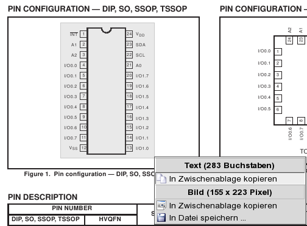
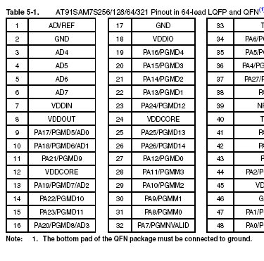
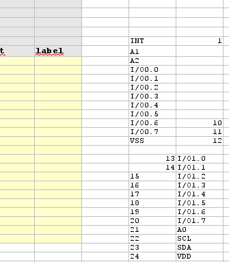
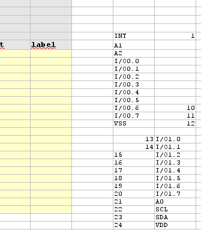
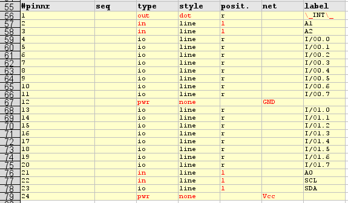

Создание символов для
принципиальных схем отнимает очень
много времени, чревато
ошибками и вообще неимоверно мучительно. К счастью, gschem использует
открытый текстовый формат файлов, легко поддающийся скриптовой обработке. В этом
кратком руководстве приводится описание того, как с
помощью скрипта tragesym очень быстро
создать символ (может быть гораздо быстрее, чем в любом из коммерческих
пакетов).
Шаг 1: Открывание файла шаблона tragesym
Шаг 2: Загрузка спецификации устройства и поиск цоколёвки с перечнем выводов
Шаг 3: Копирование перечня выводов в редактор и его обработка
Шаг 4: Добавление недостающих данных в электронную таблицу
Шаг 5: Экспорт электронной таблицы в отдельный текстовый файл
Шаг 6: Запуск tragesym для создания символа
Шаг 7: Проверка результата в gschem и небольшая доводка
В tragesym входят два файла-шаблона. Один — в
текстовом варианте, второй — в виде
электронной таблицы OpenOffice. Также их можно
найти в пакете gEDA-утилит (utils/examples/tragesym/template.src и
utils/examples/tragesym/template.ods).
Если вы предпочитаете другую
программу работы с электронными таблицами, например gnumerik или
kspread, то просто создайте свой собственный шаблон из текстового шаблона.
Единственное различие между текстовым шаблоном
и шаблоном в виде электронной таблицы — синтаксис пар “ключ-значение” в
разделах [options] и [geda_attr]. В текстовом файле они разделены
знаком равенства (ключ=значение), в электронной таблице значение находится
во втором столбце (что даёт разделитель в виде знака табуляции при экспорте).
В данном примере мы создадим символ для Philips Semiconductor PCA9555 16-bit
IIC IO port. Описание продукта и спецификация доступны на сайте Philips:
http://www-us.semiconductors.philips.com/cgi-bin/pldb/pip/pca9555.html.
Загрузите спецификацию и откройте её в программе просмотра PDF, которая
позволяет копировать текст из pdf-файла, такой как kpdf или acroread.
Пролистайте страницы, пока не найдёте цоколёвку
устройства:


Перечень выводов в спецификации может находиться только на изображении
конфигурации выводов (“Pin configuration” на первом рисунке). Если же имеется
подробная таблица (второй рисунок из другой спецификации), используйте её.
Выделите перечень выводов и скопируйте его в текстовый редактор. Этот
промежуточный шаг необходим, поскольку вашей программе работы с электронными
таблицами может понадобиться специальный разделитель полей, такой как,
например, запятая или знак табуляции.
Примечание: поведение программ kpdf и acroread при выделении
различается. Программа kpdf, кажется, создаёт копию, более похожую на
графическое представление, в то время как acroread производит вывод, более
ориентированный на “последовательность внутри файла”. Если вам нужно создать
много символов, попробуйте обе программы и сравните результаты.

 

Представленные выше рисунки иллюстрируют шаги:
Теперь переместите метки выводов в столбец меток (label) и номера выводов в
столбец номеров выводов (pinnr). Для создания номеров выводов можно также
использовать возможность автозаполнения своей программы работы с электронными
таблицами.

Установите в столбцах тип (type), стиль (style) и позиция (posit.) наиболее
общие значения. Снова можно использовать возможность автозаполнения.
Теперь вам нужно изменить некоторые значения. Взгляните на таблицу описания
выводов в спецификации:

В соответствии с этой таблицей изменяем следующее (см. результат ниже):
вывод 1 — выход, мы хотим иметь признаки отрицания — кружок у вывода и черту над его меткой;
A1 – A3 — входы, изменяем тип и перемещаем их на левую сторону;
устанавливаем выводу SCL тип “in” (вход) и перемещаем SCL и SDA также влево;
изменяем тип выводов питания VSS и VDD и добавляем имена соединений. Мы используем более привычные GND и Vcc.
Примечание: если одна из меток ваших выводов имеет внутри обратную косую
черту “\”, её необходимо заменить управляющей последовательностью “\\”.

Прежде чем продолжить, задайте надлежащие значения атрибутам (geda_attr) и ключам (options).

Можно либо использовать функцию экспорта своей программы работы с электронными
таблицами, либо просто выделить таблицу и скопировать содержимое в свой любимый
текстовый редактор и сохранить файл.
Запустите tragesym в оболочке1):
werner@werner-amd64:~/Desktop/tragesym_tutorial> tragesym pca555.src pca555.sch
Если tragesym выдаёт сообщения об ошибках, поправьте электронную таблицу и
снова выполните экспорт, либо просто отредактируйте файл, полученный в
результате экспорта ранее.
Теперь откройте созданный символ в gschem и проверьте результат
werner@werner-amd64:~/Desktop/tragesym_tutorial> gschem pca555.sch
Разрешив скрытый текст (нажав “en” или выбрав из меню Правка→Показать/скрыть невидимый текст), можно
увидеть сгенерированный символ полностью. Вовсе не обязательно что-либо
менять, но небольшая перестановка выводов может немного улучшить вид символа.


Теперь символ готов. Его можно скопировать в свою локальную библиотеку
символов, например /usr/local/share/gEDA/sym/local/, и использовать в
проектах.
В простом примере, приведённом выше, используется не очень много выводов,
данный же метод окупается с лихвой, когда выводов очень много (как, например,
в bga-272, tfqp-100, и т. д.).
 )
)